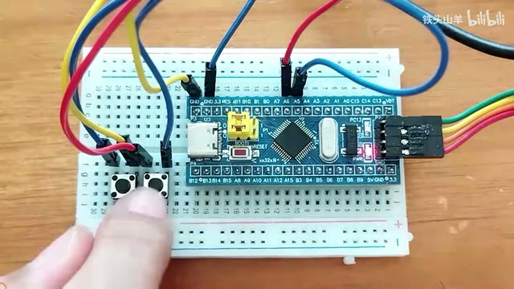
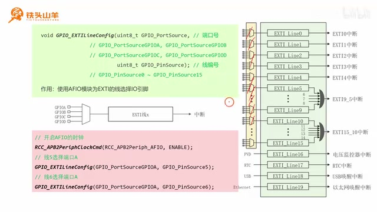
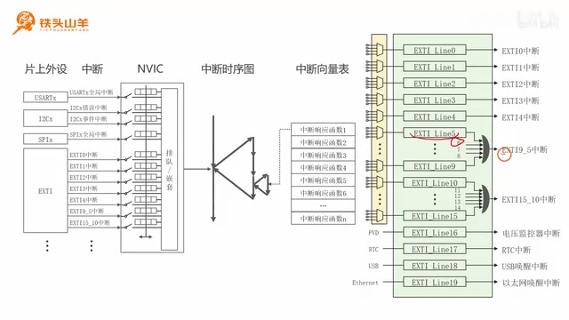
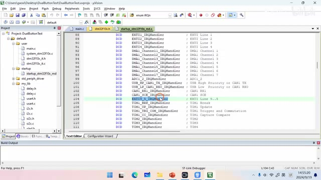
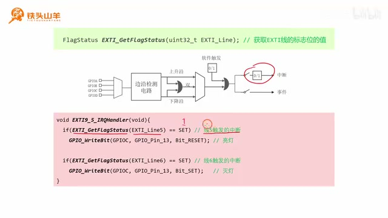
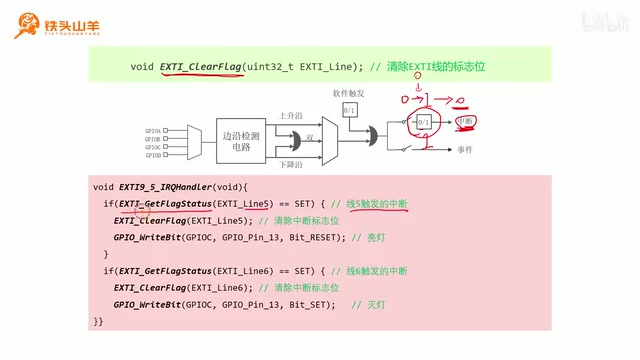
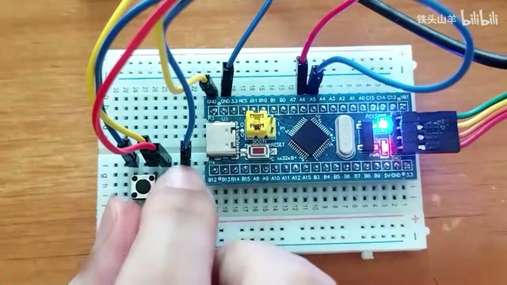
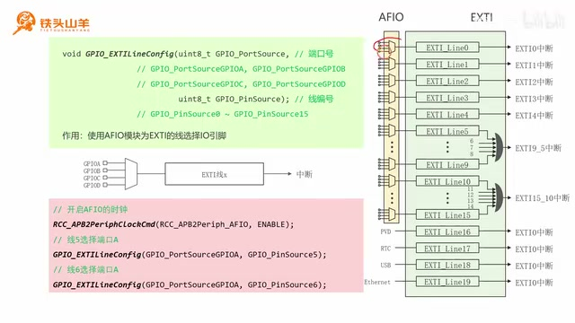

P037 · 7.2 （EXTI）按钮实验¶
大家好，我是铁头山羊。今天开始学习第七章第二节。上期视频我们了解了 EXTI 模块的工作原理，这期就通过按钮实验，看看实际编程时该怎么使用它。
这套视频所需的材料都在开发套件包里。大家可以扫描屏幕上的二维码，到淘宝店铺购买。购买套件后可以获得课程课件和源码，也可以加入答疑群直接交流。
本次要做的实验是：在面包板上放两枚按钮。左边按钮按下再松开后，板载 LED 点亮；右边按钮按下再松开后，板载 LED 熄灭。本次用 EXTI 模块来编程。内容分五部分：搭建电路并初始化板载 LED 和两枚按钮；通过编程分配 EXTI 线；配置 EXTI 内部参数；配置 NVIC 模块，因为实验要用中断；最后编写中断响应函数。
搭建按钮电路¶
先看电路图。左上方的 LED 是最小系统板上的板载 LED，接在 PC13 引脚上，连接方式是开漏。除此之外，还有两个外接按钮，分别接单片机 PA5、PA6，按钮另一端接地。右边的接线图是在面包板上放两枚按钮，一枚接 PA5，另一枚接 PA6，按钮另一端都接地，电路就搭好了。

面包板上两枚按钮分别连接到 PA5、PA6，另一端接地；板载 LED 位于开发板上。 · 原片 00:42
按图连接后，特别注意按钮的方向：这两个按钮有方向性，引脚方向上下排列，接线时不要接反；接错后电路就无法使用。电路接好后，下一步是初始化这些元器件：两枚按钮和板载 LED。
初始化板载 LED 和按钮引脚¶
板载 LED 接在 PC13 上，使用开漏接法，所以 PC13 要初始化成输出开漏模式。两枚按钮分别接 PA5、PA6，因此这两个引脚要初始化为输入上拉模式。
先拿出模板工程并解压到当前文件夹，得到 template 文件夹。把工程文件夹重新命名，例如 door button test，里面的工程文件也改成同一个名字，然后双击打开。到 Default、User 两个文件夹下面打开 main.c，今天的代码写在这个文件里。
先声明两个函数：App_OnBoardLED_Init 用来初始化板载 LED，App_Button_Init 用来初始化按钮；把两个函数原型放在 main 方法下面，再实现它们。
初始化板载 LED 的方法前面已经讲过很多遍：先开启 GPIOC 时钟，声明一个 GPIO_InitTypeDef 结构体变量并设置成员。引脚编号设为 GPIO_Pin_13，模式设为输出开漏，最大输出速度选 2 MHz 就可以，选得更大也没关系，最后调用 GPIO_Init 初始化 PC13。LED 初始化后通常希望它熄灭，所以调用 GPIO_WriteBit，向 PC13 写 1，把板载 LED 熄灭。把这个函数放到 main 的第一行调用。
接下来初始化按钮的两个引脚：PA5 代表左边按钮，PA6 代表右边按钮，两者都属于 GPIOA 端口，所以先使能 GPIOA 时钟。
声明一个 GPIO_InitTypeDef 结构体变量，名字可以自己取。先初始化 PA5：模式设为 IPU，也就是输入上拉；最大输入速度不用指定，直接调用 GPIO_Init 初始化。PA5 完成后，复制这段代码来初始化 PA6，只改引脚编号。这样两枚按钮对应的 IO 引脚都初始化完了。把按钮初始化函数放到前面进行调用。
为 EXTI 线分配 IO 引脚¶
电路和引脚初始化完成后，进入第二部分：通过编程分配 EXTI 线。
先看上期学过的 EXTI 模块内部结构图。EXTI 模块由一条一条的线组成，总共有 20 条。其中前 16 条线的输入信号由 IO 引脚从外部输入。单片机的 IO 引脚数量远不止 16 个，因此要用复用器为 EXTI 线选择输入。使用某条 EXTI 线之前，必须配置它前面的复用器。
配置复用器要用一个新的编程接口：GPIO_EXTILineConfig。它通过 AFIO 模块，让 EXTI 线选择 IO 引脚，也就是配置上面的复用器。这个接口有两个参数。第一个 GPIO_PortSource 用来选择端口号，端口可选 GPIOA、GPIOB、GPIOC、GPIOD 等；例如填 GPIO_PortSourceGPIOA 就选择 GPIOA，填 GPIO_PortSourceGPIOB 就选择 GPIOB。第二个 GPIO_PinSource 指定线的编号，范围从 GPIO_PinSource0 到 GPIO_PinSource15，对应 EXTI_Line0 到 EXTI_Line15。本次实验的两枚按钮接在 PA5、PA6，所以要把 EXTI 线 5 和线 6 都选择 GPIOA 端口。
配置 EXTI 线 5、线 6 的来源¶
先看 EXTI 线 5。线左边有一个复用器，黄色部分代表 AFIO 模块，右侧绿色部分代表 EXTI 模块。复用器位于 AFIO 内部，所以配置之前先使能 AFIO 时钟，即调用 RCC_APB2PeriphClockCmd 使能 AFIO 时钟。
时钟使能后，把 PA5 通过复用器选作 EXTI 线 5 的输入：调用 GPIO_EXTILineConfig，第一个参数填 GPIO_PortSourceGPIOA，第二个参数填 GPIO_PinSource5。这样 PA5 就选成了线 5 的输入。对线 6 做同样配置：第一个参数还是 GPIOA，第二个参数改为 GPIO_PinSource6，于是 PA6 被选作线 6 的输入。
回到 App_Button_Init 的实现。前面已经初始化 PA5 和 PA6 为 IPU（输入上拉），这是第一步。第二步是为 EXTI 线分配引脚：先使能 AFIO 模块时钟，再调用 GPIO_EXTILineConfig 分配 IO 引脚。第一次第一个参数填 GPIOA、第二个参数填 PinSource5；再调用一次，第二个参数填 6。这样 EXTI 线 5 和线 6 的输入引脚就分配好了。

EXTI 线前的复用器位于 AFIO 模块中，图中区分了 AFIO 与 EXTI，并展示了为线 5、线 6 选择 GPIOA 的配置。 · 原片 09:15
EXTI 线要配置的内容¶
引脚分配完成后，第三步是配置 EXTI 线的具体参数。看 EXTI 线的内部结构图，需要配置几个地方：前面的选择器决定捕获上升沿、下降沿还是双边沿；后面的开关要闭合，才会产生中断。
EXTI 初始化结构体和参数¶
配置这些地方要用新的编程接口 EXTI_Init，它专门用来配置一条 EXTI 线。接口只有一个参数，是结构体指针，所以先看结构体定义。结构体有几个成员，逐个来看。
EXTI_Line 用来选择线的编号。本次两个按钮分别接 PA5 和 PA6：配置第一个按钮时选择 EXTI_Line5，第二个按钮选择 EXTI_Line6。
EXTI_Mode 用来选择 EXTI 模式，有中断和事件两种。EXTI_Mode_Interrupt 代表中断；EXTI_Mode_Event 代表事件。本次使用中断，所以选 EXTI_Mode_Interrupt。
EXTI_Trigger 用来选择捕获边沿：上升沿填 EXTI_Trigger_Rising，下降沿填 EXTI_Trigger_Falling，双边沿填 EXTI_Trigger_Rising_Falling。本次要捕获按钮抬起的瞬间，也就是上升沿，因此选 Rising。
最后一个成员 EXTI_LineCmd 用来控制开关。图中有两个开关：如果 EXTI_Mode 选中断，控制上面的开关；如果选事件，控制下面的开关。本次是中断模式，所以这个参数控制上面的开关。填 ENABLE 表示闭合，填 DISABLE 表示断开。
初始化 EXTI 线 5 和线 6¶
实验用 PA5、PA6 连接按钮，因此要分别初始化 EXTI line 5 和 line 6，使用刚才介绍的 EXTI_Init。先声明一个结构体变量，为成员赋值。线 5 的编号是 EXTI_Line5，模式为中断，触发边沿选上升沿，最后 EXTI_LineCmd 填 ENABLE，闭合开关。这样线 5 初始化完成；再初始化线 6，代码与线 5 差不多，复制后把编号从 5 改成 6 即可。
在代码中进行第三步“初始化 EXTI 线”：声明结构体变量，先配置线 5。线编号填 EXTI_Line5，模式 EXTI_Mode_Interrupt（中断模式），触发边沿 EXTI_Trigger_Rising（捕获上升沿），最后 EXTI_LineCmd 选择 ENABLE，闭合开关。调用 EXTI_Init 初始化线 5。完成后复制代码，把 5 改成 6，就初始化了线 6。
配置 NVIC 中断¶
EXTI 线配置完成，下一步使用中断，所以要配置中断管理员 NVIC。图中左侧是上一章学过的中断结构框图，右侧是本章的 EXTI 图。上一章的图里已经画出了 EXTI 模块，它能产生很多中断：EXTI0、EXTI1、EXTI2、EXTI3、EXTI4，直到 EXTI9_5，以及 EXTI15_10。这些中断和 EXTI 图中的线一一对应。
EXTI 的前五条线（线 0 到线 4）各自有一个单独中断。线 5 到线 9 共用 EXTI9_5 中断；线 10 到线 15 共用 EXTI15_10 中断。本次使用线 5 和线 6，所以需要的是 EXTI9_5 中断。

EXTI 线 5 到线 9 共用 EXTI9_5 中断，线 10 到线 15 共用 EXTI15_10。 · 原片 18:06
配置 NVIC 有几件事。先设中断优先级分组，也就是图里的分界位置，例如选分组 2。此前讲过，优先级分组代码写在程序一开始，因为它对所有中断都有效。代码是 NVIC_PriorityGroupConfig，参数设为 NVIC_PriorityGroup_2。由于这里只有一个中断，选哪种分组关系不大。
设置分组后，为这个中断配置优先级并闭合开关。回到 App_Button_Init，在按钮初始化函数中已经完成前三步，现在写第四步“配置中断”。接口的参数是结构体指针，因此先声明这种结构体变量。
配置结构体的第一个参数 NVIC_IRQChannel，用来填写中断名称。查找中断名称的方法是打开顶部的 stm32f10x.h 头文件，在里面搜索枚举类型 IRQn，跳到定义处，再从枚举中找到 EXTI9_5 中断对应的名称，把它复制到第一个参数。
第二个参数是中断抢占优先级；这里只有一个中断，取值可以自行指定。子优先级也可以自行指定。最后 NVIC_IRQChannelCmd 用来闭合中断开关，填 ENABLE。把填好的结构体变量传给 NVIC_Init，中断就初始化好了。
刚才配置了中断，最后一步是编写中断响应函数。这个步骤比较复杂，分成三个小步：先确定中断响应函数名称，再判断是哪条线触发，最后清除标志位。
先找响应函数名称。打开 StartUp 文件夹里的 .s 文件，向下翻到第 57 行附近的 Vector Table Mapped to Address 0 at Reset，这里是中断向量表。表中有各种中断响应函数，找到 EXTI9_5_IRQHandler，这就是要用的函数名。复制名字，粘贴到 main 方法里合适的位置。

启动文件中断向量表的 EXTI9_5_IRQHandler 条目，是本实验共享中断对应的响应函数名称。 · 原片 21:50
接下来判断到底是哪条线触发了中断。线 5 和线 6 共用一个中断，所以中断发生时，要在响应函数里判断是线 5 还是线 6。

中断响应逻辑分别读取线 5、线 6 的标志，并为左、右按钮执行对应的 LED 控制。 · 原片 23:35
线 5 和线 6 共用一个 NVIC 中断，所以中断发生时，还需要在响应函数里判断究竟是哪一条线触发。为此要用新的编程接口 EXTI_GetFlagStatus，读取 EXTI 中断标志位的值。标志位为 0 时，函数返回 RESET；标志位为 1 时，函数返回 SET。因此我们分别查询线 5、线 6 的标志位：如果线 5 的标志为 1，就说明线 5 触发；如果线 6 的标志为 1，就说明线 6 触发。当然也可能线 5 和线 6 同时触发，所以两条线都要各自判断。
代码写在 EXTI9_5_IRQHandler 中断响应函数内部。先调用 EXTI_GetFlagStatus 查询线 5 的标志位，并判断它是否等于 SET。如果条件成立，就表示线 5 触发。线 5 对应 PA5，PA5 接的是左边按钮；左边按钮按下时要点亮 LED。然后再调用一次 EXTI_GetFlagStatus 读取线 6 的标志位。如果它等于 SET，就表示线 6 触发。线 6 对应 PA6，也就是右边按钮；右边按钮按下时要熄灭 LED。
在响应函数里写 if (EXTI_GetFlagStatus(EXTI_Line5) == SET) 检查线 5；如果成立，就调用 GPIO_WriteBit，对 PC13 写 Bit_RESET，点亮 LED。这里不能写 else，因为线 5 和线 6 可能同时触发中断。然后独立判断线 6：当它的中断标志位等于 SET 时，就熄灭 LED。
清除中断标志并验证实验¶

EXTI_GetFlagStatus 与 EXTI_ClearFlag 的配合：处理线 5 中断后清除线 5 的标志。 · 原片 25:53
中断响应函数还要第三步：清除标志位。这里的清除实际上是向这个比特位写 0。中断触发时，比特位从 0 变成 1；处理中断后要把它写回 0。否则它始终是 1，中断就会一直被触发，所以每次使用完中断都一定要执行写零操作。
清除标志要用新的编程接口 EXTI_ClearFlag，它的作用就是向比特位写 0。检测到线 5 触发后调用 EXTI_ClearFlag 清除线 5；检测到线 6 触发后清除线 6。把这段清除代码分别放在对应的两个 if 里面。这样响应函数就写完了。

按下左侧按钮后，板载 LED 点亮。 · 原片 26:46
按左上角第二个按钮编译，结果没有错误也没有警告。然后把代码下载到单片机，实际看执行效果：先按单片机的复位按钮，再按左边按钮，板载 LED 点亮；再按右边按钮，板载 LED 熄灭。实验完成。感谢大家收看，我是铁头山羊，我们下期视频再见。
片尾补充：EXTI 输入复用¶

EXTI 总体结构由多条线组成，前 16 条线通过复用器选择外部 IO 输入。 · 原片 27:08
片尾在告别之后又展示了上期视频学过的 EXTI 总体结构框图，并继续说明：EXTI 模块由一条一条的线组成，总共有 20 条，其中前 16 条线的输入信号通过单片机 IO 引脚从外部输入。单片机 IO 引脚的数量远多于 16 条，因此要用复用器为 EXTI 线进行复用。使用这条线之前，必须写代码配置复用器。